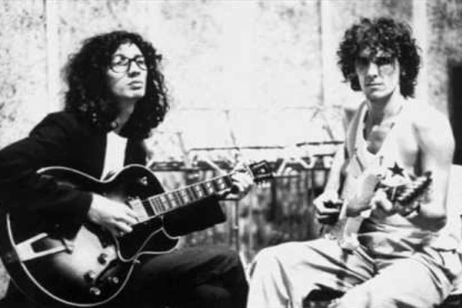
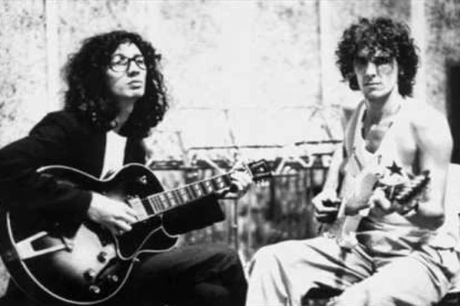

Fito paez
 


Tres agujas
Segun cuenta fito paez en una casual reunion que tuvo con Spinetta enla calle, este le expresaba la admiracion que tenia por esta cancion, era tal la admiracion que le realizo una version muy a su estilo siendo una especie de hibrido entre un jazz/blues.
Las cosas tienen movimiento
Esta cancion, compuesta por fito paez, fue un regalo a Luis. Luis la interpreto por primera vez en el 88 Café del Cerro, Santiago Chile.
Charly Garcia
Rezo por vos
«Rezo por vos» es una canción compuesta por Charly García y Luis Alberto Spinetta. Fue el único registro que quedó del truncado proyecto llamado Spinetta/García.1 Hasta el día de hoy es uno de los temas más conocidos y populares del rock argentino, y también, uno de los grandes éxitos más masivos de todos los tiempos..
Pappo Napolitano
Castillo de piedras
"Castillo de piedra" o "Tema I" es una canción compuesta por el músico argentino Pappo Napolitano, también conocida como "Hay tiempo para elegir". El tema fue editado por primera vez con el título "Castillo de piedra" por Luis Alberto Spinetta en su primer álbum solista Spinettalandia y sus amigos de 1971, pero tanto en esa oportunidad como en las sucesivas ediciones hasta 1995, la empresa RCA atribuyó erróneamente la canción a Spinetta
Mercedes Sosa

Barro tal vez
«Barro tal vez» es una canción compuesta por el músico argentino Luis Alberto Spinetta en 1965, cuando tenía 15 años,12 y que fue incluida en el álbum Kamikaze de 1982, álbum ubicado en la posición n.º 24 de la lista de los 100 mejores discos del rock argentino por la revista Rolling Stone.3 La canción fue seleccionada por Spinetta para interpretar en el concierto unplugged de la cadena MTV, denominado Estrelicia (1997), donde realiza una versión estrictamente solista, acompañándose con una guitarra acústica y un piano Rhodes. El tema también fue elegido por la cantante folklórica Mercedes Sosa para ser incluido en su álbum de duetos Cantora, un viaje íntimo, cantado a dúo con Spinetta..